Advanced Command-Line Navigation & File System Operations
Master Linux Like a Pro | 8-12 Hour Comprehensive Course
This Linux command line tutorial teaches you essential terminal navigation and file system operations from the ground up. Whether you're a beginner learning your first commands or an intermediate user refining your skills, this comprehensive guide covers everything from basic directory navigation to advanced search techniques. Master the Linux terminal through hands-on examples, practical exercises, and real-world scenarios. Learn to navigate the file system, manage files efficiently, and execute commands with confidence using bash shell commands and Linux utilities.
Learning Objectives
Chapter 1 - Linux Fundamentals
Chapter 2 - Filesystem Hierarchy Standard (FHS)
Chapter 3 - Navigation Mastery
Chapter 4 - File Operations Mastery
Chapter 5 - File Viewing and Content Analysis
Chapter 6 - Hidden Files and Links
Chapter 7 - Search and Inventory Mastery
Chapter 8 - Disk Usage and System Monitoring
📚 Chapter 1: Linux Fundamentals
Understanding the Linux Ecosystem
What Makes Linux Special?
Linux isn't just an operating system—it's a philosophy of open-source computing that powers everything from smartphones to supercomputers. Unlike proprietary systems, Linux gives you complete control over your computing environment.
The Linux Kernel: Your System's Heart
The Kernel is the master conductor orchestrating your entire system:
- Hardware Communication - Translates software requests to hardware actions
- Process Scheduling - Manages CPU time allocation
- Memory Management - Handles RAM allocation and virtual memory
- File System Operations - Controls data storage and retrieval
Understanding the Linux Architecture (architecture)
Think of Linux as a three-story building where each floor serves a specific purpose:
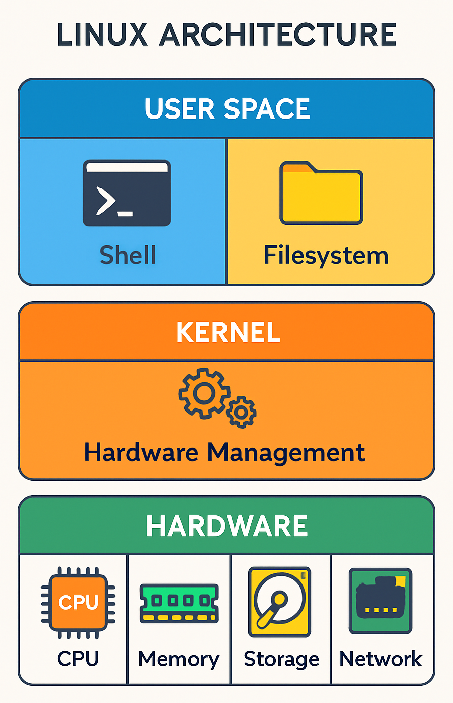
💡 Pro Tip: Understanding this layered approach is crucial for troubleshooting Linux systems and advancing in DevOps roles.
The Three Pillars of Linux
| Component | Description | Your Interaction |
|---|---|---|
| Kernel | The core that manages hardware and system resources | You rarely interact directly |
| Shell | The command interpreter (your command-line interface) | This is where you'll work |
| Filesystem | How files and directories are organized | What you'll navigate daily |
Pillar 1: The Linux Kernel - The Silent Guardian
What is the Kernel?
The kernel is the heart of Linux - a sophisticated program that acts as a bridge between your applications and the computer's hardware. Think of it as the building manager who handles all the behind-the-scenes operations.
Core Kernel Responsibilities
| Function | Description | Real-World Example |
|---|---|---|
| Process Management | Controls which programs run and when | Opening multiple browser tabs |
| Memory Management | Allocates RAM to different programs | Switching between applications |
| Device Drivers | Communicates with hardware components | Recognizing USB drives |
| File System Interface | Manages how data is stored and retrieved | Saving a document |
| Network Stack | Handles internet and network connections | Browsing websites |
| Security & Permissions | Controls access to system resources | User login authentication |
Why You "Rarely Interact Directly"
The kernel operates in kernel space - a protected area where only the kernel can execute code. This design provides:
- System Stability: Prevents user programs from crashing the entire system
- Security: Protects critical system functions from malicious code
- Resource Management: Ensures fair allocation of system resources
Hands-On: Exploring Kernel Information
# Check your kernel version and build information
uname -a
Output
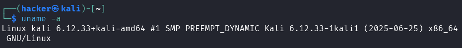
# See current date and time
date
Output
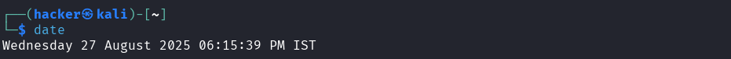
# Display the current logged-in user
whoami
Output
# Show system uptime and load
uptime
Output
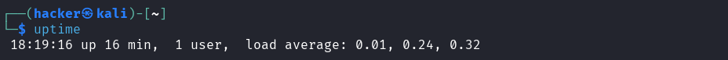
# View detailed kernel information
cat /proc/version
Output
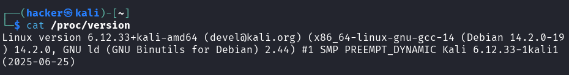
# See what kernel modules are currently loaded
lsmod | head -10
Output
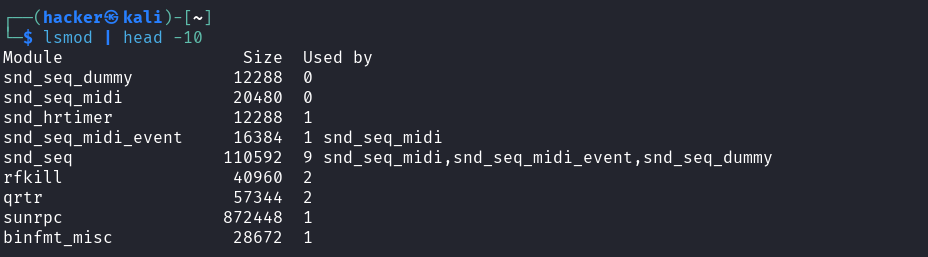
# Check kernel boot messages (system startup log)
dmesg | grep -i "linux version"
Output
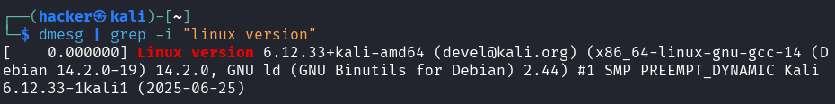
⚠️ Important: Never attempt to modify kernel files directly unless you're an experienced system administrator. Always use proper tools and commands.
Pillar 2: The Shell - Your Command Center
What is the Shell?
The shell is your command interpreter - the interface where you communicate with Linux using text commands. It's like having a conversation with your computer in a language it understands.
Popular Shell Types
| Shell | Description | Default Prompt | Best For |
|---|---|---|---|
| Bash | Bourne Again Shell (most common) | user@host:~$ |
General use, scripting |
| Zsh | Z Shell (feature-rich) | % |
Power users, customization |
| Fish | Friendly Interactive Shell | > |
Beginners, auto-completion |
| Dash | Debian Almquist Shell | $ |
System scripts, speed |
Shell Components Deep Dive
- Command Prompt Anatomy
username: Your account nameusername@hostname:current_directory$
hostname: Computer name
current_directory: Where you are in the filesystem
$: Regular user (# for root/admin) - Command Structure
command [options] [arguments] │ │ │ │ │ └── What to act upon │ └── How to modify behavior └── What action to take
Pillar 3: The Filesystem - Your Digital Filing Cabinet
Understanding Linux Filesystem Hierarchy
Linux organizes everything as files in a tree-like structure starting from the root directory
(/). This is fundamentally different from Windows' drive letters (C:, D:, etc.).
The Linux Directory Tree
/ ← Root directory (everything starts here)
├── bin/ ← Essential user command binaries
├── boot/ ← Boot loader files
├── dev/ ← Device files (hardware interfaces)
├── etc/ ← System configuration files
├── home/ ← User home directories
│ ├── user1/
│ └── user2/
├── lib/ ← Essential shared libraries
├── media/ ← Mount point for removable media
├── mnt/ ← Temporary mount point
├── opt/ ← Optional application software
├── proc/ ← Virtual filesystem (process info)
├── root/ ← Root user's home directory
├── run/ ← Runtime variable data
├── sbin/ ← System administration binaries
├── srv/ ← Service data
├── sys/ ← Virtual filesystem (system info)
├── tmp/ ← Temporary files
├── usr/ ← User utilities and applications
│ ├── bin/ ← User command binaries
│ ├── lib/ ← Libraries for user programs
│ └── local/ ← Local software installations
└── var/ ← Variable data (logs, databases)
├── log/ ← System and application logs
└── www/ ← Web server filesKey Directory Purposes Explained
| Directory | Purpose | What You'll Find | Access Level |
|---|---|---|---|
/home/ |
User personal files | Documents, downloads, configs | User read/write |
/etc/ |
System configuration | Config files, startup scripts | Admin only |
/var/log/ |
System logs | Error logs, access logs | Admin read |
/tmp/ |
Temporary files | Temporary data, cleared on reboot | Everyone |
/usr/bin/ |
User programs | Applications, utilities | Everyone read |
Popular Linux Distributions Comparison
| Distribution | Best for | Package Manager | Security Focus |
|---|---|---|---|
| Ubuntu | Beginners, Desktopc | Beginners, Desktop | Medium |
| CentOS/RHEL | Enterprise Servers | YUM/DNF | High |
| Kali Linux | Penetration Testing | APT | Very High |
| Debian | Servers, Stability | APT | High |
| Arch Linux | Customizationc | Customization | Medium |
The Linux Boot Process Explained
Brief Explanation
- Power On: The process starts as soon as you turn on the computer.
- BIOS/UEFI: The motherboard firmware initializes the hardware and checks everything is OK (POST – Power-On Self-Test).
- Bootloader (e.g., GRUB): The bootloader finds and loads the Linux kernel into memory. Here, you may see a menu to select which OS or kernel to boot.
- Kernel: The Linux kernel initializes your system's CPU, memory, devices, and mounts the filesystem.
- Init System (systemd, SysVinit): The init process (called systemd on most modern systems) starts all the necessary services and brings the system to a usable state.
- User Login: Finally, the login prompt appears, and you can log in to use your computer.
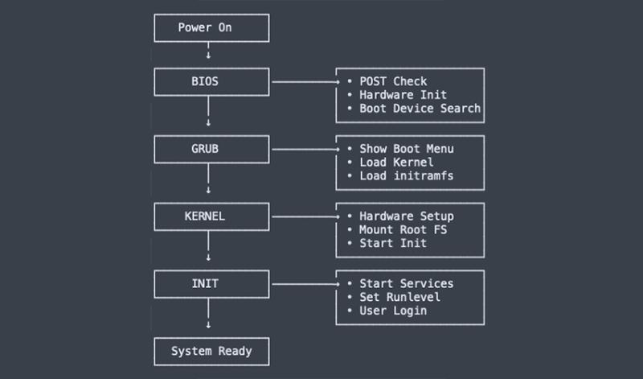

💡 Pro Tip:
Use dmesg | less to view boot messages and troubleshoot hardware
issues.
📁 Chapter 2: Filesystem Hierarchy Standard (FHS)
Mastering the Linux Directory Tree
Linux organizes everything in a hierarchical tree structure. Think of it as an upside-down tree with roots at the top (/) and branches extending downward. Understanding this structure is crucial for navigation and security.
Key Directory Purposes Explained
| Directory | Purpose | Contents | Security Notes |
|---|---|---|---|
/ (Root Directory) |
Foundation of filesystem | Everything | Compromise = total system control |
/bin |
Essential Binaries | Core system commands (ls, cp, mv) | Often symlinked to /usr/bin |
/boot |
Boot Files | Kernel, bootloader configs | Tampering prevents system boot |
/dev |
Device Files | Hardware device interfaces | Direct hardware access |
/etc |
Configuration | System-wide config files | Prime target for persistence |
/home |
User Directories | Personal user data | Privacy and credential risks |
/lib |
System Libraries | Shared libraries and modules | Library injection attacks |
/media |
Removable Media | USB, CD/DVD mount points | Potential malware entry |
/mnt |
Mount Points | Temporary filesystem mounts | Network share vulnerabilities |
/opt |
Optional Software | Third-party applications | Often less secured |
/proc |
Process Info | Virtual filesystem for processes | System information disclosure |
/root |
Root Home | Superuser home directory | Crown jewels of the system |
/run |
Runtime Data | Process IDs, sockets | Temporary but critical |
/sbin |
System Binaries | Administrative commands | Privileged operations |
/srv |
Service Data | Data for system services | Web server document roots |
/sys |
System Info | Hardware and kernel data | System configuration exposure |
/tmp |
Temporary Files | Temporary storage | Common attack vector |
/usr |
User Programs | Applications and utilities | Largest directory, many targets |
/var |
Variable Data | Logs, caches, spools | Evidence and log tampering |
Exploring Key Directories
Root Directory (/) - Your Starting Point
# Check your kernel version and build information
cd /
ls -la
cd /
Purpose: Navigate to the root directory
cd= Change Directory command/= Root directory (the top-level directory of the entire file system)
ls -la
Purpose: List all files and directories with detailed information
ls= List command (shows directory contents)l= Long format (shows detailed information like permissions, size, date)a= All files (includes hidden files that start with a dot)
Output
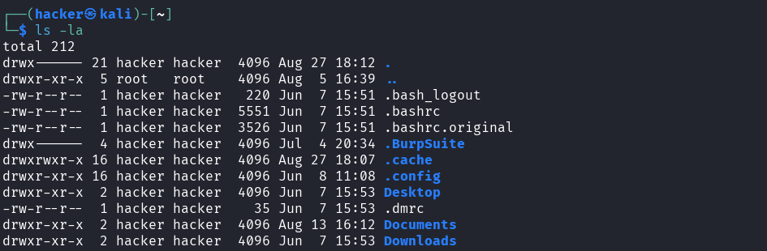
# Explore critical configuration files
ls -la /etc/ | head -10
Output
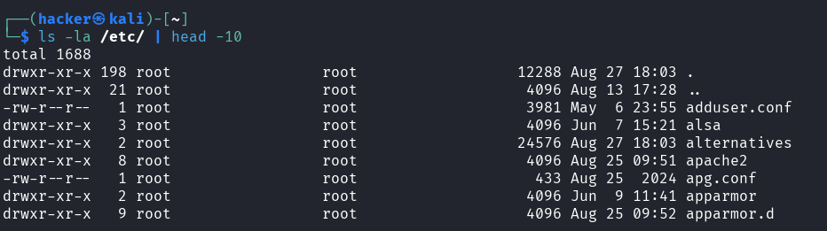
Explanation → ls -la /etc/ | head -10
/etc - Configuration Command
Center
Purpose: Show the first 10 items in the /etc directory with details
ls -la /etc/= List all files in /etc directory with long format|= Pipe (sends output to next command)head -10= Show only the first 10 lines
# System version info
cat /etc/os-release
Output
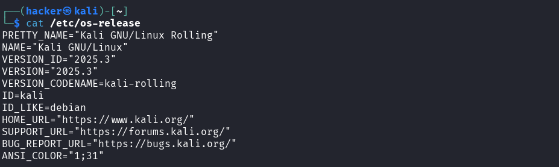
Explanation → cat /etc/os-release
Purpose: Display operating system version and information
cat= Display file contents/etc/os-release= Standard file containing OS identification data
# User accounts (first 5 line)
cat /etc/passwd | head -5
Output
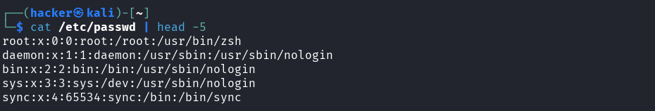
Explanation → cat /etc/passwd | head -5
Purpose: Display the first 5 user accounts from the system
cat /etc/passwd= Display the password/user database file|= Pipe output to next commandhead -5= Show only first 5 lines
🔒 Security Alert: The /etc directory contains
system-critical configurations. Always backup before modifications and monitor for
unauthorized
changes.
# Check log files and variable data
ls -la /var/
Output
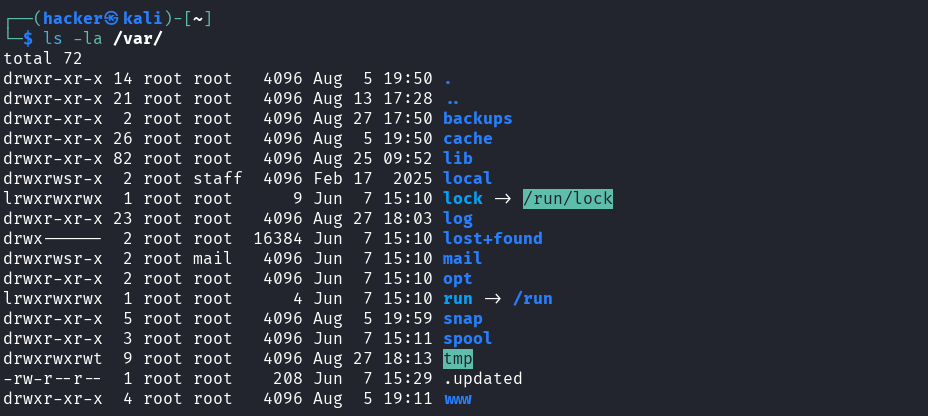
Explanation → ls -la /var/
/var - The Dynamic Data
Hub
Purpose: List all contents of the /var directory with detailed information
ls -la= List all files/directories with long format details/var/= Variable data directory (logs, temporary files, databases, etc.)
# Log file sizes
du -sh /var/log/*
Output
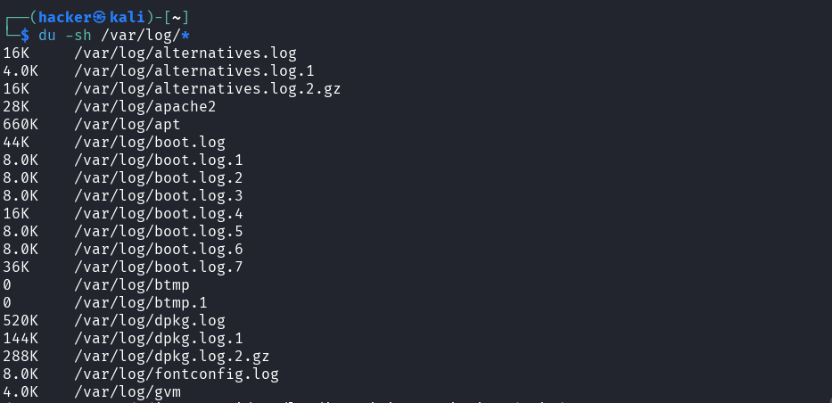
Explanation → du -sh /var/log/*
Purpose: Show disk usage size of each log file/directory
du= Disk Usage commands= Summary (total size for each item, not subdirectories)h= Human-readable format (KB, MB, GB instead of bytes)/var/log/*= All files and directories inside /var/log/
# Recent authentication attempts
tail -n 10 /var/log/auth.log
Output
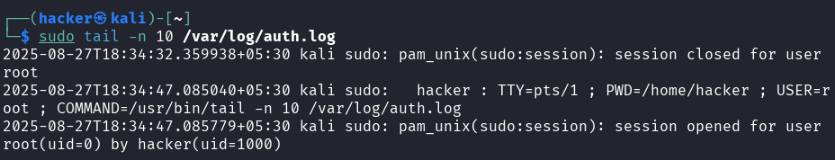
Explanation → tail -n 10 /var/log/auth.log
Purpose: Display the last 10 lines of the authentication log
tail= Show end of filen 10= Show last 10 lines (you can change the number)/var/log/auth.log= Authentication and authorization log file
# Examine temporary files (security-critical)
ls -la /tmp/
Output
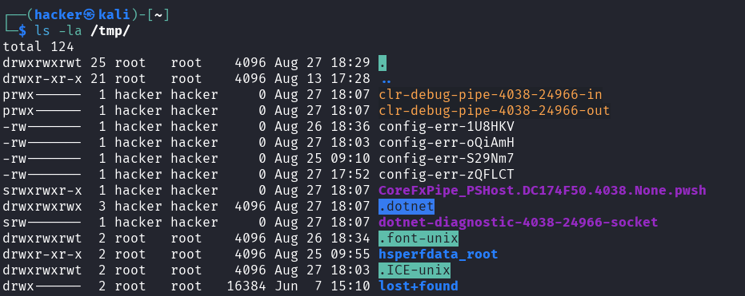
Explanation → ls -la /tmp/
/tmp - The Wild West
Directory
Purpose: List all files and directories in the temporary folder with detailed information
ls -la= List all files (including hidden) with long format/tmp/= Temporary directory where programs store temporary files
# Check available space
df -h /tmp
Output
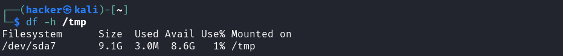
Explanation → df -h /tmp
Purpose: Check available disk space for the /tmp directory
df= Display filesystem disk space usageh= Human-readable format (shows GB, MB instead of bytes)/tmp= Check specifically the /tmp filesystem
# Files created today
sudo find /tmp -type f -mtime -1
Output
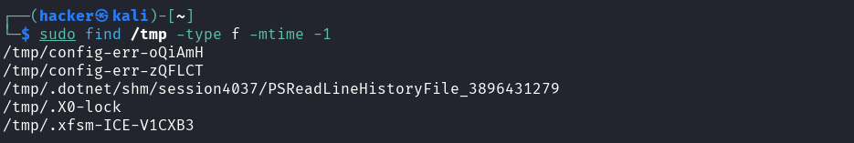
Explanation → find /tmp -type f -mtime -1
Purpose: Find all regular files in /tmp that were modified within the last 24 hours
find= Search for files and directories/tmp= Search location (temporary directory)type f= Only find regular files (not directories or special files)mtime -1= Modified time less than 1 day ago (within last 24 hours)
⚠️ Security Warning: /tmp is world-writable and
often
exploited. Monitor for suspicious scripts, SUID binaries, and unusual activity.
Directory Permissions Decoder
Understanding permission strings is crucial for security:
-rw-r--r-- 1 user user 1024 Aug 15 10:30 filename.txt │└┬┘└┬┘└┬┘ │ │ │ │ │ │ │ │ │ │ │ │ │ │ │ └─ Filename │ │ │ │ │ │ │ │ └─ Modification timestamp │ │ │ │ │ │ │ └─ File size (bytes) │ │ │ │ │ │ └─ Group owner │ │ │ │ │ └─ User owner │ │ │ │ └─ Number of hard links │ │ │ └─ Other permissions (read, write, execute) │ │ └─ Group permissions (read, write, execute) │ └─ Owner permissions (read, write, execute) └─ File type indicator
Directory Permissions Quick Reference
| Permission | Owner | Group | Others | Meaning |
|---|---|---|---|---|
| drwxr-xr-x | rwx | r-x | r-x | Directory with full owner access |
| -rw-r--r-- | rw- | r-- | r-- | Regular file, owner can write |
| -rwxr-xr-x | rwx | r-x | r-x | Executable file |
🧭 Chapter 3: Navigation Mastery
Know Your Location with pwd
The pwd (Print Working Directory) command is your GPS in the Linux
filesystem:
# Show current directory
pwd
Output
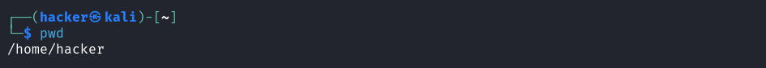
# Show physical path (resolve symlinks)
pwd -P
Output
# Show logical path (default)
pwd -L
Output
Master Directory Changes with cd = Change Directory
The cd command is used to navigate between directories (folders) in
the
Linux/Unix file system. It changes your current working directory to a different location.
Basic Syntax
cd [directory_path]
Common Uses and Examples:
1. Navigate to Home Directory
# Go to your home directory
cd
# Also goes to home directory
cd ~
# Another way to go home
cd $HOME
2. Navigate to Specific Directory
# Go to Documents folder
cd /home/user/Documents
# Go to system configuration directory
cd /etc
# Go to log files directory
cd /var/log
3. Navigate Using Relative Paths
# Go to Documents in current directorycd Documents
# Go up one directory level
cd ../
# Go up two directory levels
cd ../../
# Go to folder in current directory
cd ./folder
4. Navigate to Previous Directory
# Go back to previous directory you were in
cd -
5. Navigate to Root Directory
# Go to root directory (top of file system)
cd /
Special Directory Symbols:
.= Current directory..= Parent directory (one level up)~= Home directory/= Root directory-= Previous directory
Practical Examples:
# Start in /home/user
# Shows: /home/userpwd
# Now in: /home/user/Documents
cd Documents
# Now in: /home/user/Downloads
cd ../Downloads
# Now in: /tmp
cd /tmp
# Back to: /home/user/Downloads
cd -
# Back to: /home/user (home)
cd
# Now in: / (root)
cd /
Advanced Navigation Techniques
# Move through multiple levels (Relative path navigation)
cd documents/projects/current
# Start from root (# Absolute path navigation)
cd /var/www/html/assets
# Now in: /home/user/Downloads
cd /var/www/html/assets
# Auto-completes to Documents/
cd Doc<TAB>
# First subdirectory containing projects
cd */projects
Supercharge Navigation with CDPATH
CDPATH is an environment variable that creates directory shortcuts,
allowing you to jump to frequently-used directories from anywhere in the file system without
typing
full paths.
How CDPATH Works
When you use cd with a relative path, the shell searches these
locations
in order:
- Current directory (
.) - Each directory listed in
CDPATH - Finds the first match and changes to that directory
Set up directory shortcuts for instant teleportation:
Path Breakdown:
.= Current directory (always search here first)~= Home directory~/projects= Your projects folder/var/www= Web server files/opt= Optional software directory
# Set CDPATH environment variable
export CDPATH=".:~:~/projects:/var/www:/opt"
# Works from anywhere if ~/projects exists
cd projects
# Jumps to /var/www/html if it exists
cd html
# Could jump to /var/logs if configured
cd logs
# Make it permanent by adding to ~/.bashrc
echo 'export CDPATH=".:~:~/projects:/var/www:/opt"' >> ~/.bashrc
Practical Examples
| Before CDPATH (Manual) | After CDPATH (Supercharged) |
|---|---|
cd /home/user/projects/webapp |
cd webapp |
cd /var/www/html |
cd html |
cd /opt/software |
cd software |
| Long, tedious paths | Short, intuitive commands |
Path Types: Absolute vs. Relative
| Path Type | Example | When to Use | Advantages |
|---|---|---|---|
| Absolute | /home/user/documents/report.txt |
Scripts, automation | Reliable, unambiguous |
| Relative | ../documents/report.txt |
Interactive navigation | Shorter, flexible |
| Home-relative | ~/documents/report.txt |
User-specific paths | Portable across users |
💡 Pro Tip: Use absolute paths in scripts and cron jobs for reliability, relative paths for interactive navigation efficiency.
📄 Chapter 4: File Operations Mastery
The ls Command: Your File System X-Ray (List Directory Contents)
The ls command displays the contents of directories, showing files and subdirectories. It's one of the most fundamental and frequently used commands in Linux/Unix systems.
Basic Listing Operations
# Basic listing
ls
Output
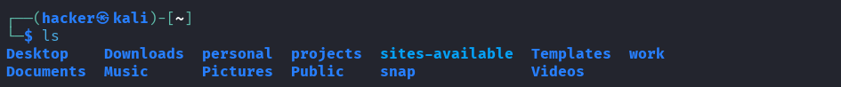
# Long format with details
ls -l
Output
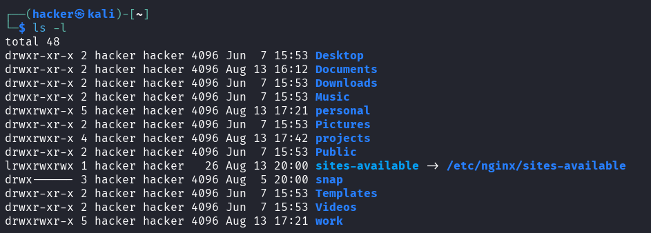
# Include hidden files
ls -a
Output
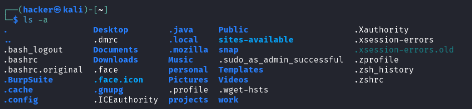
# Combined: long format + hidden
ls -la
Output
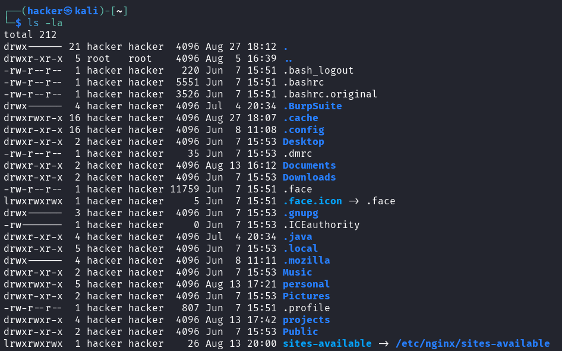
# Add human-readable file sizes
ls -lah
Output
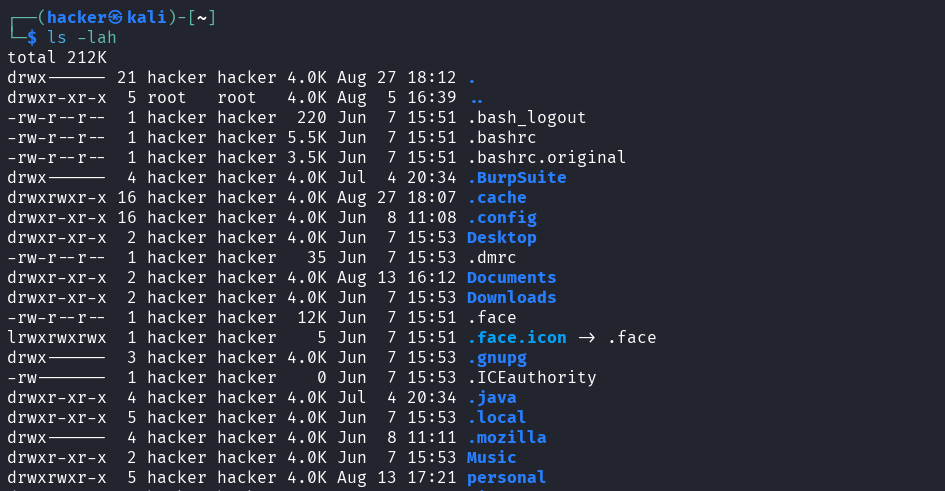
Flag description
-l= long format (detailed information)-a= all files (including hidden)-h= human-readable file sizes (must be used with -l)
Advanced Listing Techniques
# Sort by modification time (newest first)
ls -lt
# Sort by file size (largest first)
ls -lS
# Reverse sort order
ls -lr
# Show inode numbers
ls -li
# Recursive listing
ls -lR
# Color-coded output
ls --color=always
Understanding ls -la Output Anatomy:
-rwxr-xr-- 1 alice dev 1.2K Nov 15 10:30 script.sh │ │ │ │ │ │ │ │ │ │ │ │ │ └─ Filename │ │ │ │ │ └─ Modification timestamp │ │ │ │ └─ File size │ │ │ └─ Group owner │ │ └─ User owner │ └─ Number of hard links └─ Permissions (type + rwx for owner, group, others)
File Creation and Management
The Versatile touch Command
The touch command in Unix/Linux systems is used to create
empty
files or update timestamps of existing files.
What it does:
- Creates new empty files if they don't exist
- Updates the access and modification timestamps of existing files to current time
- Does NOT modify the content of existing files
Basic syntax:
touch filename
# Create empty files
touch newfile.txt
# Create Multiple files
touch file1.txt file2.txt file3.txt
# Updates access/modify time
touch existing_file.txt
# Set specific timestamps (# YYYYMMDDhhmm format)
touch -t 202311151030 dated_file.txt
# Human-readable date
touch -d "2023-11-15 10:30" another_file.txt
The cp Command: Copying with Precision
The cp command in Unix/Linux systems is used to copy files and
directories
from one location to another.
What it does:
- Copies files or directories
- Creates duplicate of the original (original stays intact)
- Can copy to same directory with different name (duplicating)
- Can copy to different directory
Basic syntax:
cp source destination
# Simple copy
cp source.txt destination.txt
# Copy to directory
cp source.txt /backup/
# Advanced copying options
# Preserve permissions, timestamps
cp -p source.txt backup.txt
# Recursive (for directories)
cp -r directory/ /backup/
# Interactive (prompt before overwrite)
cp -i source.txt existing.txt
# Verbose (show what's copied)
cp -v *.txt /backup/
# Update (copy only if newer)
cp -u source.txt dest.txt
Sample Output for cp -i
cp: overwrite 'existing.txt'? y
Sample Output for cp -v
'document1.txt' -> '/backup/document1.txt' 'document2.txt' -> '/backup/document2.txt' 'notes.txt' -> '/backup/notes.txt'
Flag description
p= Preserve original propertiesr= Recursive (go deeper)i= Interactive (ask me first)v= Verbose (tell me what you're doing)u= Update (only if newer)
The mv Command: Moving and Renaming
The mv command in Unix/Linux systems is used to move or rename files
and
directories.
What it does:
- Moves files/folders from one location to another
- Renames files/folders (moving within the same directory)
- Cuts and pastes (unlike
cpwhich copies)
Basic syntax:
mv source destination
# Rename files and directories
# Rename file
mv oldname.txt newname.txt
# Rename directory
mv old_directory new_directory
# Move files and directories
# Move file
mv file.txt /destination/directory/
# Move multiple files
mv *.log /var/log/archive/
# Move directory
mv directory/ /new/location/
# Interactive and verbose options
# Prompt before overwrite
mv -i important.txt /backup/
# Show move operations
mv -v *.txt ~/documents/
Flag description
i= Interactive (ask me first before overwriting)v= Verbose (tell me what you're doing)
The rm Command: Deletion with Caution
The rm command in Unix/Linux systems is used to remove (delete) files
and
directories.
What it does:
- Deletes files permanently
- Removes directories when used with proper flags
- Files are typically gone forever (no recycle bin)
Basic syntax:
rm filename
# Basic file removal
# Remove single file
rm unwanted.txt
# Remove multiple files
rm file1.txt file2.txt
# Remove files by pattern
rm *.tmp
# Directory removal
# Remove directory recursively
rm -r directory_name/ /
# Remove directory recursively
rm -r directory_name/ /
# Force removal (no prompts)
rm -rf directory_name/
# Safe removal practices
# Interactive removal
rm -i suspicious.txt
# Interactive + verbose
rm -iv *.tmp
# Prompt once for 3+ files
rm -I directory/
Flag description
-r= recursive (remove directories and their contents)-f= force (no prompts, ignore non-existent files)-i= interactive (prompt before each removal)-v= verbose (show what's being removed)-I= prompt once for multiple files (capital i)
Sample Output for rm -i
rm: remove regular file 'suspicious.txt'? y
File Operations Safety Matrix
| Command | Risk Level | Use Case | Safety Recommendation |
|---|---|---|---|
rm file.txt |
🟢 Low | Single files | Generally safe |
rm -i file.txt |
🟢 Very Low | Any deletion | Always recommended |
rm -r directory/ |
🟡 Medium | Directory removal | Double-check path |
rm -rf directory/ |
🔴 HIGH | Force removal | Use sparingly |
rm -rf / |
⚫ CRITICAL | System destruction | Never Execute |
🚨 Security Warning: Always use the interactive flag (-i) for important deletions. The rm -rf
combination can cause catastrophic data loss with a single typo.
👁️ Chapter 5: File Viewing and Content Analysis
The cat command in Unix/Linux systems is used to
display,
concatenate, and create file contents.
What it does:
- Displays file contents on the screen
- Concatenates (joins) multiple files together
- Creates new files when used with redirection
- Reads and outputs file contents to standard output
Basic syntax:
cat filename
Display Content with cat
# Display entire file contents
# Show complete file
cat filename.txt
# Concatenate multiple files
cat file1.txt file2.txt
# Number all lines
cat -n filename.txt
# Number only non-blank lines
cat -b filename.txt
# Show all characters (including hidden)
cat -A filename.txt
Flag description
n= Number all linesb= Number only non-blank linesA= Show all characters (including hidden ones)
Peek at Files with head and tail
The head command in Unix/Linux systems is used to display the
first few lines of a file or input.
What it does:
- Shows the beginning of files
- Displays first 10 lines by default
- Quick preview of file contents
- Reads and outputs file contents to standard output
Basic syntax:
head filename
The head Command - File Beginnings
# First 10 lines (default)
head filename.txt
Output
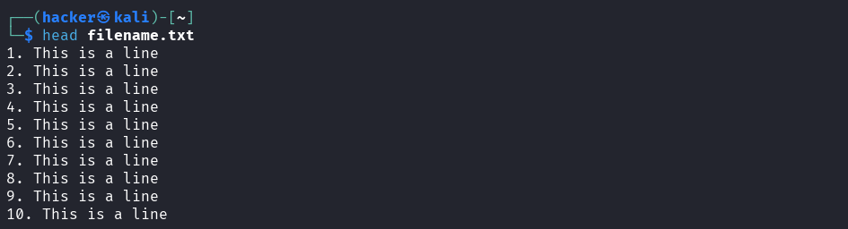
# First 5 lines
head -n 5 filename.txt
Output
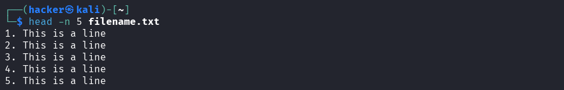
# First 100 characters
head -c 100 filename.txt
Output
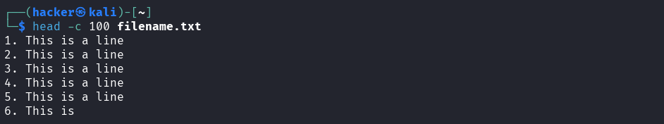
# All except last 5 lines
head -n -5 filename.txt
Output
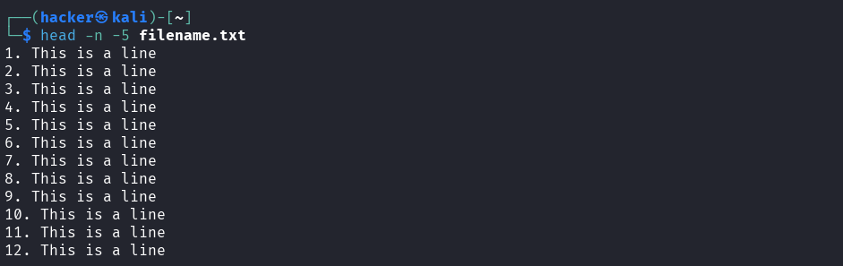
Flag description
n NUMBER= Show first NUMBER linesc NUMBER= Show first NUMBER characters (bytes)n -NUMBER= all Not including the end
The tail Command - File Endings
The tailThe tail command in Unix/Linux systems is used to
display
the last few lines of a file or input.
What it does:
- Shows the end of files
- Displays last 10 lines by default
- Monitor file changes in real-time (with
f) - Works with text files and command output
Basic syntax:
tail filename
# Last 10 lines (default)
tail filename.txt
Output
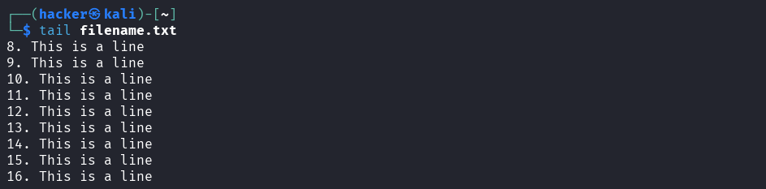
# Last 20 lines
tail -n 12 filename.txt
Output
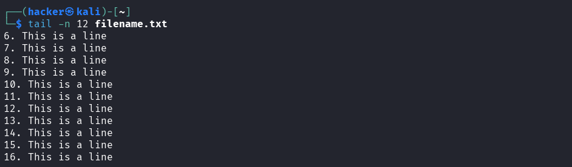
# Last 50 characters
tail -c 50 filename.txt
Output
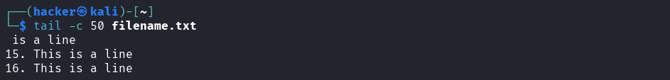
# From line 5 to end
tail -n +5 filename.txt
Output
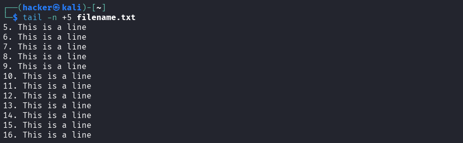
# Real-time monitoring (essential for logs)
# Follow file changes
tail -f /var/log/syslog
Output
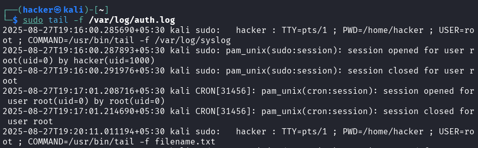
# Follow with retry if file rotates
tail -F /var/log/syslog
Output
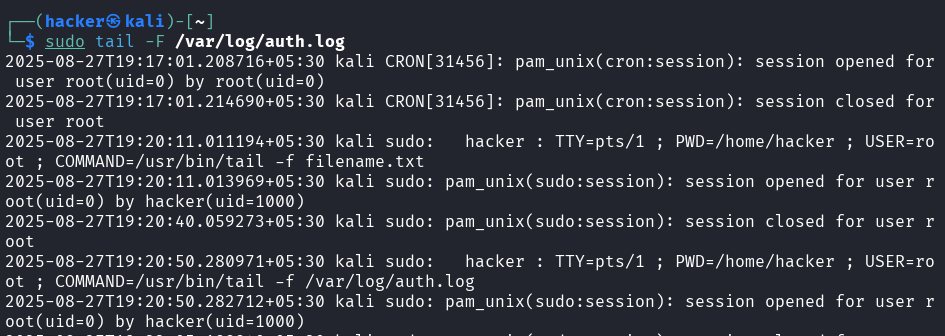
Flag description
n NUMBER= Show last NUMBER linesc NUMBER= Show last NUMBER characters (bytes)f= Follow (monitor file for new content)F= Follow with retry (handles file rotation)+NUMBER= Start from line NUMBER to end
💡Pro Tip: Use tail -f for real-time log
monitoring
during troubleshooting or security investigations.
Interactive Viewing with less
The less command in Unix/Linux systems is used to view and
navigate through file contents one screen at a time.
What it does:
- Displays file contents with pagination
- Interactive navigation through large files
- Search functionalitywithin files
- Memory efficient - doesn't load entire file at once
- Read-only viewer - cannot edit files
Basic syntax:
less filename
# Open file for interactive browsing
less filename.txt
# Start in follow mode
less +F /var/log/syslog
# Start at end of file
less +G filename.txt
# No Line Wrapping
less -N filename.txt
# Show all characters (including hidden)
less -S filename.txt
# Don't Clear Screen
less -X filename.txt
Flag description
N= Show line numbersS= Don't wrap long lines (horizontal scrolling)i= Ignore case in searchesX= Don't clear screen when exiting+F= Follow (live monitoring)+G= Go to end (G is the "go to end" key in less)N= Numbers (show line numbers)
Essential less Navigation Commands:
| Key | Action | Key | Action |
|---|---|---|---|
Space |
Next page | b |
Previous page |
j |
Next line | k |
Previous line |
g |
Go to beginning | G |
Go to end |
/pattern |
Search forward | ?pattern |
Search backward |
n |
Next search result | N |
Previous search result |
q |
Quit | h |
help |
File Type Identification with file
The file command in Unix/Linux systems is used to determine
the
type and format of files by examining their contents.
What it does:
- Identifies file types regardless of file extension
- Analyzes file content rather than just the filename
- Detects file formats (text, binary, images, executables, etc.)
- Shows file characteristics like encoding, architecture, etc.
Basic syntax:
file filename
file filename.txt
Output
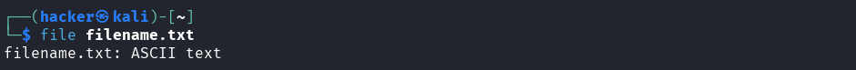
file projects
Output
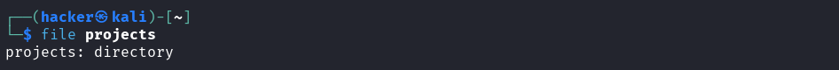
file unknown_data.bin
Output
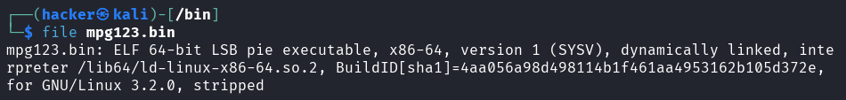
# Check all files in directory
file *
Output
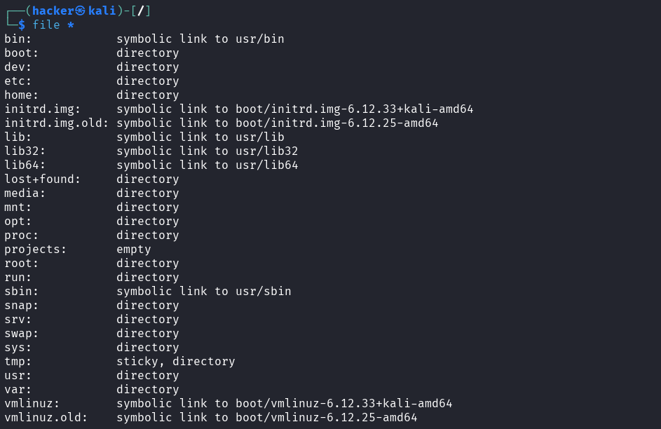
Flag description
b= Brief (show only file type, not filename)i= Show MIME (Multipurpose Internet Mail Extensions) type instead of descriptionL= Follow symbolic linksz= Look inside compressed files
🔍 Security Application: Always use file to
verify
file types before execution, especially when investigating potential malware or suspicious
downloads.
🔍 Chapter 6: Hidden Files and Links
Understanding Hidden Files
In Linux, any file or directory starting with a dot (.) is hidden from
standard directory listings. This feature reduces clutter but can also conceal malicious files.
# Find hidden files recursively
# Hidden files only
find . -name ".*" -type f
Output
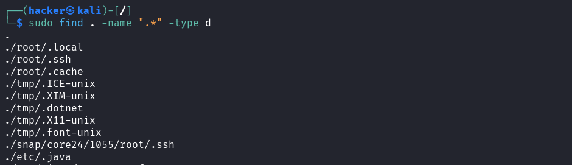
# Hidden directories only
find . -name ".*" -type d
Output
# Detailed hidden file info
find /home -name ".*" -exec ls -la {} \;
Output
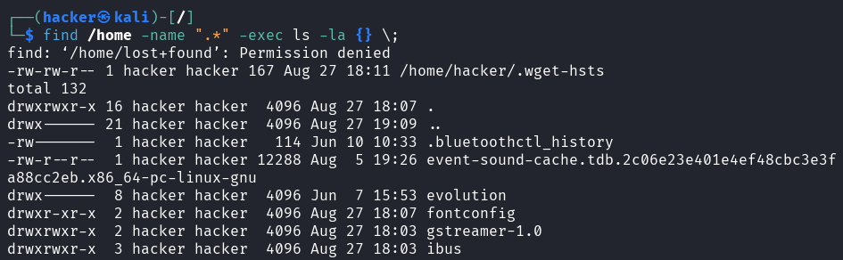
Critical Hidden Files for Security
| File/Directory | Purpose | Security Implications |
|---|---|---|
.bash_history |
Command history | May contain sensitive commands/passwords |
.bashrc |
Shell configuration | Can contain malicious aliases or functions |
.ssh/ |
SSH configuration | Contains private keys and authorized hosts |
.gnupg/ |
GPG keys | Encryption and signing keys |
.mysql_history |
MySQL command history | Database passwords and queries |
.viminfo |
Vim editor info | Recently edited files and search patterns |
Understanding Links: Hard vs. Symbolic
Symbolic Links (Symlinks)
Symbolic links are shortcuts that point to other files or directories:
# Create symbolic links
ln -s /path/to/original /path/to/link
# Link to a directory
ln -s /var/log/apache2 web_logs
# Relative symlink
ln -s ../shared-config.txt config.txt
# Identify symbolic links
# List only symlinks
ls -la | grep "^l"
# Check if file is a symlink
file file.txt
Output
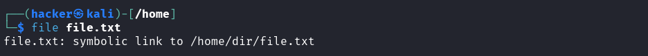
# Show target of symlink
readlink file.txt
Output
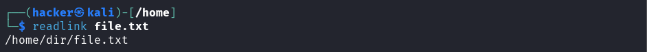
Flag description
-s= symbolic/soft link (creates a pointer, not a copy)
Hard Links
Hard links create multiple directory entries for the same file:
# Create Hard links
ln original.txt hardlink.txt
# Hard link across directories (same filesystem)
ln /path/to/file /another/path/link
# Check inode numbers
ls -li original.txt hardlink.txt
Output
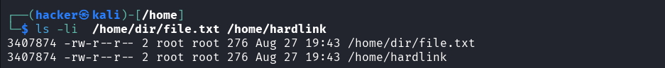
# Find all hard links to file
find . -samefile original.txt
Output
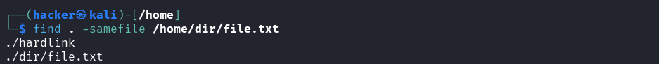
Flag description
ls -i= show inode numbersls -l= symbolic/soft link (creates a pointer, not a copy)find -samefile= locate all hard links to a file
Hard Link vs Symbolic Link Comparison:
| Aspect | Hard Link | Symbolic Link |
|---|---|---|
Inode |
Same as original | Different inode |
File deletion |
Original survives if links exist | Broken link if original deleted |
Cross-filesystem |
Not supported | Supported |
Directory linking |
Not allowed | Allowed |
Space usage |
No additional space | Minimal additional space |
Performance |
Direct access | Slight overhead |
🔒 Security Best Practice: Always verify link destinations before following them, especially in scripts or automated processes.
🔎 Chapter 7: Search and Inventory Mastery
The find Command: Your File System Detective
The find command is one of the most powerful tools in Linux, enabling
complex searches across your entire system.
Basic Search Patterns
# Search by filename
# Case-sensitive search
find . -name "*.txt"
Output
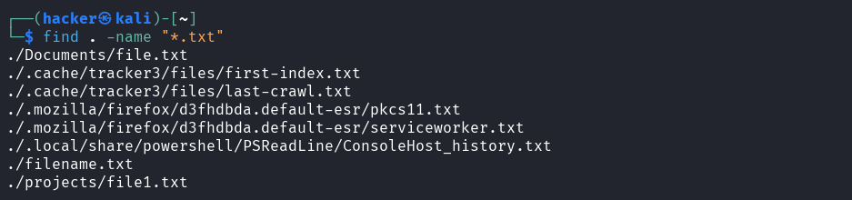
# Case-insensitive search
find . -iname "*.TXT"
Output
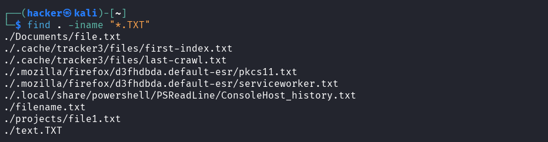
# Wildcard patterns
find /home -name "config*"
Output
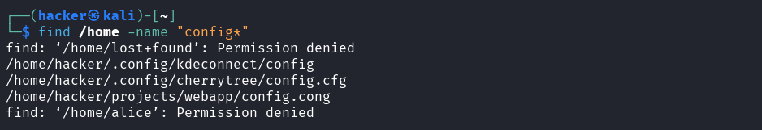
# Multiple patterns (.log OR .tmp)
find . -name "*.log" -o -name "*.tmp"
Output
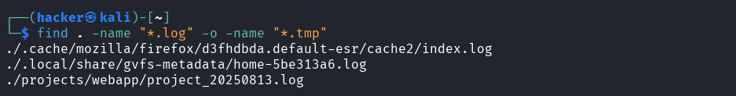
Search by File Type
# Regular files only
find /var -type f -name "*.log"
Output
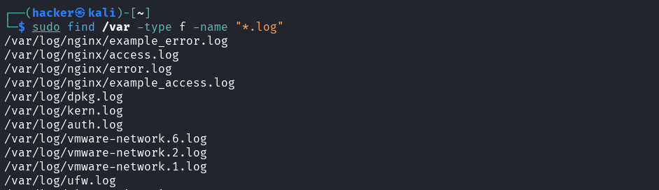
Flag description
type d= Search for regular files onlyname "*.log"= Match files ending with .log extension
# Directories only
find /usr -type d -name "*bin*"
Output
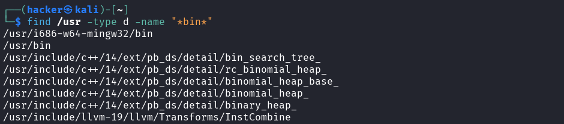
Flag description
type d= Search for directories onlyname "*bin*"= Match directories containing "bin"
# Symbolic links only
find /dev -type l
Output
Flag description
type l= Search for symbolic links only
# Executable files
find . -type f -executable
Output
Flag description
type f= Search for regular files onlyexecutable= Match files that are executable by current user
# Readable files
find . -type f -readable
Output
Flag description
type f= Search for regular files onlyreadable= Match files that are readable by current user
Time-Based Searches (Critical for Forensics)
# Search by modification time
# Modified in last 7 days
find /var -type f -mtime -7
Output
Flag description
type f= Search for regular files onlymtime -7= Modified within the last 7 days (less than 7 days ago)
# Modified more than 30 days ago
find /tmp -type f -mtime +1
Output
Flag description
type f= Search for regular files onlymtime +30= Modified more than 30 days ago
# Modified in last 60 minutes
find . -type f -mmin -60
Output
Flag description
type f= Search for regular files onlymmin -60= Modified within the last 60 minutes
# Search by access time
# Accessed in last 24 hours
find /home -type f -atime -1
Output
Flag description
type f= Search for regular files onlyatime -1= Accessed within the last 24 hours (1 day)
# Not accessed in 7+ days
find . -type f -atime +90
Output
Flag description
type f= Search for regular files onlyatime +90= Not accessed for more than 90 days
# Search by creation time (if supported)
# Created after date
find . -type f -newerct "2025-08-27"
Output
Flag description
type f= Search for regular files onlynewerct "2023-11-01"= Created after the specified date (November 1, 2023)
Time Flag Summary:
Modification Time:
mtime -N= Modified less than N days agomtime +N= Modified more than N days agommin -N= Modified less than N minutes ago
Access Time::
atime -N= Accessed less than N days agoatime +N= Not accessed for more than N days
Creation Time:
newerct "date"= Created after specified datenewermt "date"= Modified after specified date
Size-Based Searches
# Search by file size
# Files larger than 10MB
find /var -type f -size +10M
Output
Flag description
type f= Search for regular files onlysize +100M= Files larger than 100 megabytes
# Files smaller than 1KB
find . -type f -size -1k
Output
Flag description
type f= Search for regular files onlysize -1k= Files smaller than 1 kilobyte (1024 bytes)
# Files between 1k-10MB
find /tmp -type f -size +1k -size -10M
Output
Flag description
type f= Search for regular files onlysize +1k= Files larger than 1 gigabytesize -10MB= Files smaller than 2 gigabyte- Combined effect: Files between 1GB and 2GB in size
# Empty files and directories
find . -empty
Output
Flag description
empty= Find empty files (0 bytes) and empty directories (no contents)
Size Unit Suffixes:
Available size units:
c= bytesw= 2-byte wordsk= kilobytes (1024 bytes)M= megabytes (1024 KB)G= gigabytes (1024 MB)T= terabytes (1024 GB)
Size Operators:
Size prefixes:
+N= Greater than N units-N= Less than N unitsN= Exactly N units
Lightning-Fast Searches with locate
The locate command uses a pre-built database for instant filename
searches:
# Update the locate database (run as root)
# Update file database
sudo updatedb
# Find files named nginx.conf
locate nginx.conf
Output
# Case-insensitive search
locate -i pdf
Output
# Limit to 5 results
locate -l 5 "*.txt"
Output
Flag description
-i= ignore case (case-insensitive search)-l NUMBER= limit results to specified number of entries
Content Searching with grep
grep (Global Regular Expression Print) is a powerful command-line text
search utility in Linux that searches for patterns within files or input streams and prints
matching
lines.
Basic Syntax
grep [OPTIONS] PATTERN [FILE...]
Basic Text Searching
# Limit to 5 results
# Find "error" in syslog
grep "error" /var/log/syslog
# Case-insensitive search
grep -i "warning" /var/log/messages
# Show line numbers
grep -n "TODO" script.sh
# Count occurrences
grep -c "failed" auth.log
Flag description
-i= ignore case (case-insensitive search)-n= show line numbers-c= count matches (shows number, not the actual lines)
Recursive Directory Searching
# Search through directory trees
# Search recursively
grep -r "password" /etc/
# Recursive with line numbers
grep -rn "TODO" ~/projects/
# Recursive, case-insensitive
grep -ri "copyright" /usr/src/
# Search only Python files
grep -r --include="*.py" "import" .
# Exclude log files
grep -r --exclude="*.log" "error" .
Flag description
-i= ignore case (case-insensitive search)-r= Search recursively through all subdirectories-n= Display line numbers where matches are found
Additional Recursive Flags:
File Filtering:
-include="pattern"= Only search files matching pattern-exclude="pattern"= Skip files matching pattern-exclude-dir="pattern"= Skip directories matching pattern
Advanced grep Techniques
# Context and formatting
# Show 3 lines before/after match
grep -C 3 "error" logfile.txt
# 2 before, 1 after
grep -B 2 -A 1 "warning" log.txt
# Invert match (exclude lines)
grep -v "INFO" application.log
# Extended regex
grep -E "(error|warning|critical)" log.txt
# Fixed string (no regex)
grep -F "literal.string" file.txt
Flag description
-C 3= Show 3 lines of context (both before and after each match)-B 2= Show 2 lines before each match-A 1= Show 1 line after each match-v 1= Invert match (show lines that do NOT contain the pattern)-E= Use extended regular expressions (same asegrep)-F= Treat pattern as fixed string (no regular expression interpretation)
Search Command Comparison Matrix
| Command | Strengths | Speed | Use Cases | Database Required |
|---|---|---|---|---|
find |
Complex filters, real-time | Slower | Custom searches, file attributes | No |
locate |
Instant results | Very Fast | Simple filename searches | Yes (updatedb) |
grep |
Content searching | Medium | Text pattern matching | No |
💾 Chapter 8: Disk Usage and System Monitoring
Filesystem Analysis with df
The df (disk free) command shows filesystem disk space usage:
# Basic disk usage
df
Output
# Human-readable format (KB, MB, GB)
df -h
Output
# Human-readable with 1000-byte units
df -H
Output
# Show filesystem types
df -T
Output
# Show inode usage instead of blocks
df -i
Output
Flag description
-h= human-readable (1024-byte units: 1K = 1024 bytes)-H= human-readable (1000-byte units: 1K = 1000 bytes)-T= show filesystem type-i= show inode information instead of block usage
Focused Filesystem Monitoring
# Monitor specific filesystems
# Root filesystem only
df -h /
Output
# Multiple specific paths
df -h /home /var
Output
# Filter important filesystems
df -h | grep -E "(/$|/home|/var)"\
Output
# Inode monitoring (important for many small files)
# Highlight filesystems >80% inode usage
df -i | awk '$5+0 > 80 {print}'
Output
Explanation → df -i | awk '$5+0 > 80 {print}'
Purpose: Shows filesystems where inode usage is over 80% (helps identify partitions running out of available file slots).
i= Show inode information instead of block usage|= Pipe (sends output to next command)$5= References the 5th field (Use% column - inode usage percentage)+0= Converts the string to numeric value (removes the % symbol)> 80= Condition to check if usage is greater than 80%{print}= Action to print the entire line when condition is true
Directory Usage Analysis with du
The du (disk usage) command analyzes directory space consumption:
# Summarize directory size
du -sh /var/log
Output
# Top 10 largest subdirectories
du -h /var/log/ | sort -hr | head -10
Output
# All files and dirs with sizes
du -ah . | head -20
Output
# Depth 1 only (immediate subdirs)
du -d 1 -h /usr
Output
Flag description
s= Summarize (show only total size, not individual subdirectories)h= Human-readable format (KB, MB, GB, etc.)a= Show all files and directories (not just directories)d 1= Maximum depth of 1 level (show only immediate subdirectories)
Critical Disk Usage Thresholds
| Usage Level | Action Required | Risk Assessment | Automated Response |
|---|---|---|---|
| < 70% | Normal monitoring | 🟢 Low | Continue monitoring |
| 70-85% | Plan cleanup | 🟡 Medium | Send notification |
| 85-95% | Immediate attention | 🟠 High | Alert administrators |
| > 95% | Emergency cleanup | 🔴 Critical | Stop non-essential services |
Essential Monitoring Commands
# Continuous monitoring
# Update every 5 seconds
watch -n 5 'df -h'
# Monitor log growth
watch -n 10 'du -sh /var/log'
# Find disk space consumers
# Interactive disk usage analyzer
ncdu /
# Clean old temp files
find /tmp -type f -mtime +7 -delete
# Clean old systemd logs
journalctl --vacuum-time=30d
# Clean package cache (Ubuntu/Debian)
apt-get autoremove && apt-get autoclean
💡 Pro Tip: Set up automated monitoring with tools like cron and df to alert you before disk
space
becomes critical.
🏆 Module Summary and Practical Challenges
🎯 Skills Mastery Checklist
Fundamental Knowledge:
- Linux Architecture: Understand kernels, distributions, and boot processes
- FHS Structure: Navigate the filesystem hierarchy confidently
- Security Awareness: Identify vulnerabilities in file operations
Core Navigation Skills
- Path Mastery: Switch between absolute, relative, and home-relative paths
- Efficient Movement: Use cd, pwd, and CDPATH for rapid navigation
- Directory Analysis: Understand permissions and ownership
File Operation Proficiency:
- Safe File Management: Create, copy, move, and delete files securely
- Content Analysis: View and analyze file contents effectively
- Hidden File Detection: Find and evaluate concealed system files
Advanced Search Capabilities:
- Multi-tool Searching: Combine find, locate, and grep strategically
- Time-based Forensics: Search files by creation, modification, and access times
- Size and Type Filtering: Locate files by attributes and characteristics
System Monitoring Expertise:
- Disk Usage Analysis: Monitor filesystem usage and identify bottlenecks
- Proactive Maintenance: Set up automated monitoring and cleanup procedures
Upcoming Module
Module 2: User and group management with security considerations
🚀 Next Steps in Your Linux Journey
Congratulations! You've successfully completed Module 1 and built a solid foundation in Linux command-line navigation and file system operations. You're now ready to tackle more topics.
About Website
DevSpireHub is a beginner-friendly learning platform offering step-by-step tutorials in programming, ethical hacking, networking, automation, and Windows setup. Learn through hands-on projects, clear explanations, and real-world examples using practical tools and open-source resources—no signups, no tracking, just actionable knowledge to accelerate your technical skills.
Color Space
Discover Perfect Palettes
AD
Featured Wallpapers (For desktop)
Download for FREE!
.png)
.png)
.png)
.png)
.png)
.png)
AD
AD